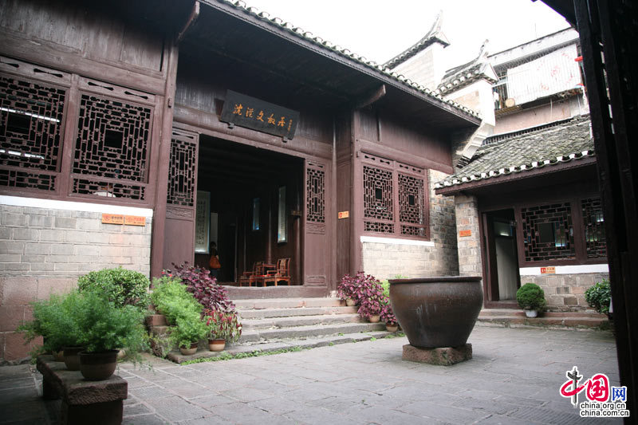
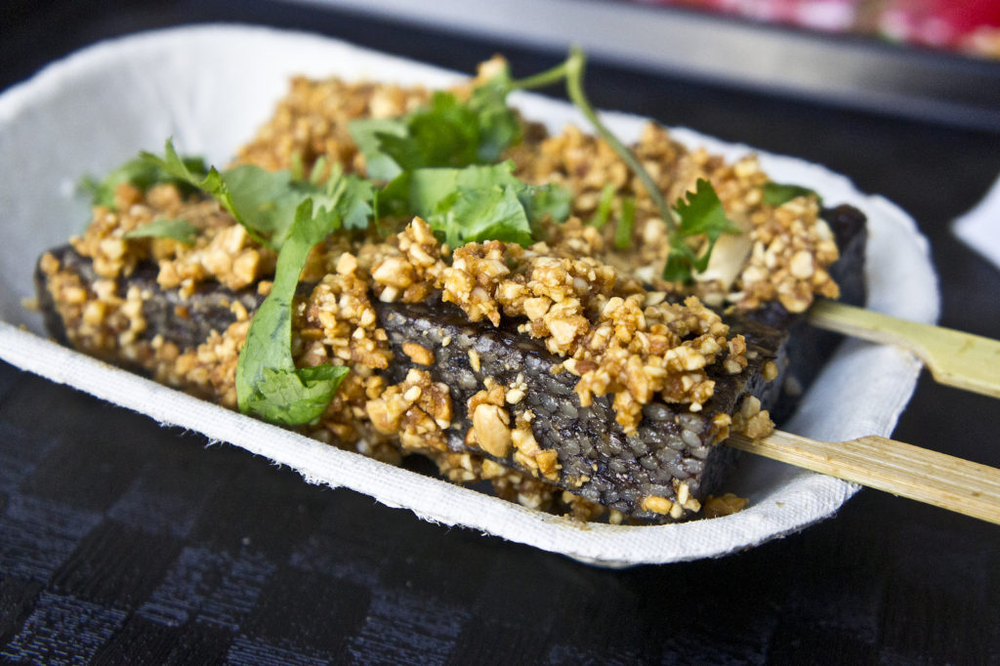

Discover Fenghuang
Fenghuang Ancient Town, also known as Phoenix Ancient Town, is a well-preserved historic town located in western Hunan Province. Built on the banks of the Tuojiang River, this picturesque town features traditional wooden stilt houses, stone bridges, and winding cobblestone streets that create a charming atmosphere from another era. Founded during the Ming Dynasty and flourishing in the Qing Dynasty, Fenghuang was once an important trading center on the ancient tea and salt route.
Suggested Visit Time
Recommended Duration: 2-3 days
Best Time to Visit: March to May (spring) and September to November (autumn) when the weather is mild and comfortable. Avoid summer heat and winter cold.

Tuojiang River & Stilt Houses
The Tuojiang River is the heart of Fenghuang Ancient Town, with traditional wooden stilt houses built along its banks, foundations resting on stilts in the water.
Visitors can take a leisurely bamboo raft ride down the river, passing under ancient stone bridges. The river is especially magical at night with thousands of red lanterns.

Hongqiao (Rainbow Bridge)
Hongqiao is one of Fenghuang's most iconic landmarks, a beautiful wooden covered bridge spanning the Tuojiang River, built during the Ming Dynasty.
The bridge's upper level houses a tea house and shops, while the lower level offers stunning views of the river and surrounding stilt houses.

Wanshou Palace
Wanshou Palace, or the Palace of Longevity, is an important historical site built during the Qing Dynasty, dedicated to the local patron saint Yang Zaosi.
Visitors can explore the temple halls, admire the ancient wooden architecture, and learn about Fenghuang's religious and cultural history.

Shen Congwen Former Residence
A memorial museum dedicated to China's celebrated modern writer Shen Congwen, whose works like "Border Town" brought fame to Fenghuang.
The traditional wooden courtyard house has been preserved, showcasing personal belongings, manuscripts, and insights into the author's life.

Wanming Pagoda
Wanming Pagoda is a beautiful seven-story pagoda on the banks of the Tuojiang River, an iconic landmark originally built during the Qing Dynasty.
Visitors can climb the pagoda's narrow stairs to enjoy panoramic views of the river, stilt houses, and surrounding mountains.
Local Food
Fenghuang offers a delicious blend of Hunan and Miao ethnic cuisine, featuring bold flavors, fresh local ingredients, and unique cooking methods.

Xue Tao Cai (Blood Cake)
A traditional Miao and Tujia ethnic delicacy made from glutinous rice, pork, and pig blood, steamed with various seasonings.

Miao Sour Soup
A signature dish made with fermented rice or tomatoes, creating a tangy broth with fish, meat, or vegetables.

Smoked Pork with Wild Vegetables
Traditional smoked pork cured over wood fires, stir-fried with wild mountain vegetables like bracken fern or bamboo shoots.

Fenghuang Rice Noodles
Popular breakfast and street food served in a flavorful broth with braised pork, pickled vegetables, peanuts, and fresh herbs.